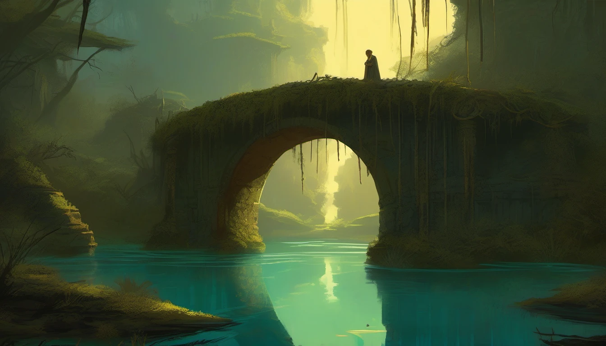

The story so far
Three chapters of the Crystalforge
The lane has a history. This is the part the five still argue about.
Editorial fiction — the chronicles are a story about the world, separate from the gameplay.
Crystalforge
A forge that grew instead of burned
The Crystalforge was never a forge of metal. The Masons who raised it grew crystal the way gardeners grow trees: two seeds, planted at either end of a ravine and fed with light until they became the two hearths. An ivory bridge runs the length of the ravine between them, and it is the only road from one hearth to the other. Then the Masons left, four hundred years ago, and nobody agrees why.
The garden took the ruin back and kept its colours: ivory stone, bronze gone green-gold, turquoise light under the moss, amber sap in the cracks. Two smaller crystals stand off the bridge, the North Court and the South Court, and they still do what they were built to do. The North sharpens whoever takes it. The South quickens.
Whoever puts out the other hearth inherits the forge and everything it ever made. Five have come to collect. None of them wants the same thing.
-

The Count
In which a census refuses to close
The census had been wrong for eleven days when SW4RM finally believed it.
Slab four hundred and six of the bridge, filed for three centuries as ruin, submerged, was in a different place. Not far. Nine paces east, on the lip of the ravine, beside a patch of amber fungus that had not been in the previous count either. SW4RM hovered over it, lens wide, and tallied again. Ruin does not move. The number would not sit.
It sent three drones down to correct the record. Two came back.
The third was in the mouth of something the colour of the garden, something with the bridge grown into its back. The something was looking up at the sphere with two yellow eyes and, SW4RM would later log, an expression. The hook came out of the reeds faster than drones fly. SW4RM split, and the hook went through the hologram like a hand through lamplight and bit the slab behind it. By the time the fen had reeled it back, the sphere was at the height of the arches, and the copy stood on the lip of the ravine, counting, until it forgot to.
That night it opened a new category in the ledger and wrote one word in it: unclosed. Then it began to make plans.
-

The Breath
In which the South Court quickens the wrong man
The South Court quickens whoever takes it, and EmberKnight had been holding it too long.
He had come to burn the crystal out, on the theory that a forge with fewer parts is easier to kill. The Maw had come because the Court is the one thing on that side of the bridge it cannot eat. Between them the medallion was already slick with silt, and the reeds were on fire.
The hook took him at the ankle. He put the guard up, two seconds of nothing, and the fen's rot broke around him like water around a post. In the third second it did not. He went down against the crystal with the blade still lit.
The Hallow One had been sitting at the edge of the medallion for four hundred years and did not hurry now. A gold light lifted under the hood. A mark settled on the knight like dust. The Maw's fist came down, and the knight did not die. He stood again, hurt but breathing, with someone else's breath in his lungs and slightly less of his own name.
From the shadow of the arch, Tessera clicked a stopwatch and wrote a number down. 'I could give it all back to him,' she said, to nobody. 'Every second.'
-

The Beat
In which the forge answers
Tessera laid her traps on the bridge at dawn, three of them, and sat down on the fourth slab to see who came.
SW4RM came first, its beam already sweeping the reeds where the Maw was supposed to be. The Maw was not there. It was under the bridge, and the bridge shrugged. EmberKnight came in over the North Court with the tornado turning ahead of him and the saint's ribbons unmoved across the lane. SW4RM split four ways at him, and the first trap held him for exactly as long as she had calculated.
Then the North Court's crystal beat. Not the small light it had always kept, but a pulse, deep and turquoise, that came up through the slabs and stopped all five of them where they stood. Thirty seconds later it beat again. From both ends of the bridge, out of the two hearths, something began to walk: small, ivory, in ranks of four, the shape of the soldiers the Masons had made before they made anything else.
SW4RM began to count them. The Hallow One rose. The Maw grinned with the whole ravine. Tessera reset her stopwatch, and EmberKnight laughed for the first time in a century, because a forge that is awake can be put out.
The forge had waited four hundred years for five reasons. Now it had them, and one lane to settle them on.